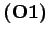
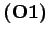
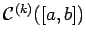

Inhalt Index DeskTop Bronstein

 Funktionalanalysis Vektorräume Geordnete Vektorräume Kegel und Halbordnung
Funktionalanalysis Vektorräume Geordnete Vektorräume Kegel und Halbordnung


Bereits am Beispiel des mit dem ersten Quadranten als Kegel geordneten Vektorraumes  wird eine typische Erscheinung in geordneten Vektorräumen ersichtlich, auf die mit den Begriffen ,,Halbordnung`` oder ,,teilweise`` bereits hingewiesen wurde, nämlich, daß nicht beliebige zwei Vektoren vergleichbar sein müssen. Die aus den Vektoren x=(1,-1) und y=(0,2) gebildeten Differenzen, also die Vektoren x-y=(1,-3) und , liegen nicht in
wird eine typische Erscheinung in geordneten Vektorräumen ersichtlich, auf die mit den Begriffen ,,Halbordnung`` oder ,,teilweise`` bereits hingewiesen wurde, nämlich, daß nicht beliebige zwei Vektoren vergleichbar sein müssen. Die aus den Vektoren x=(1,-1) und y=(0,2) gebildeten Differenzen, also die Vektoren x-y=(1,-3) und , liegen nicht in  , so daß weder
, so daß weder  noch
noch  gilt. Die durch einen Kegel in einem Vektorraum eingeführte Ordnung ist also lediglich eine teilweise oder partielle. Es läßt sich zeigen, daß die Relation
gilt. Die durch einen Kegel in einem Vektorraum eingeführte Ordnung ist also lediglich eine teilweise oder partielle. Es läßt sich zeigen, daß die Relation  die folgenden Eigenschaften besitzt:
die folgenden Eigenschaften besitzt:
| (12.26) |
| (12.27) |
| (12.28) |
| (12.29) |
Man nennt diese Gleichungen Axiome des geordneten Vektorraumes. Umgekehrt, ist ein Vektorraum  mit einer Ordnungsrelation versehen, d.h. für gewisse Paare seiner Elemente ist eine binäre Operation
mit einer Ordnungsrelation versehen, d.h. für gewisse Paare seiner Elemente ist eine binäre Operation  erklärt, die den Axiomen  bis genügt, dann setzt man
erklärt, die den Axiomen  bis genügt, dann setzt man
| (12.30) |
und kann zeigen, daß ein Kegel ist. Die jetzt durch in  einführbare Ordnung ist identisch mit der vorhandenen Ordnung
einführbare Ordnung ist identisch mit der vorhandenen Ordnung  ; folglich sind die beiden aufgezeigten Möglichkeiten der Einführung einer Ordnung in einem Vektorraum äquivalent.
; folglich sind die beiden aufgezeigten Möglichkeiten der Einführung einer Ordnung in einem Vektorraum äquivalent.
Ein Kegel heißt erzeugend, wenn jedes Element  als x = u-v mit dargestellt werden kann. Man schreibt dafür auch -
als x = u-v mit dargestellt werden kann. Man schreibt dafür auch - .
.
| Beispiel A |
|
Die Ordnung im Raum |
(s. Beispiel C) eingeführt. In den Folgenräumen, betrachtet man die natürliche koordinatenweise Ordnung. Sie ergibt sich mit Hilfe des Kegels, den man in einem solchen Raum als Durchschnitt von K (s. (12.31)) mit dem jeweiligen Raum erhält. Die positiven Elemente in diesen geordneten Vektorräumen sind dann jeweils die Folgen mit nichtnegativen Gliedern. Selbstverständlich können auch andere Kegel und damit auch von der natürlichen Halbordnung verschiedene Ordnungen in diesen Räumen betrachtet werden (s. Lit. 12.20, 12.22).
| Beispiel B |
|
In den reellen Funktionenräumen und  erklärt man |